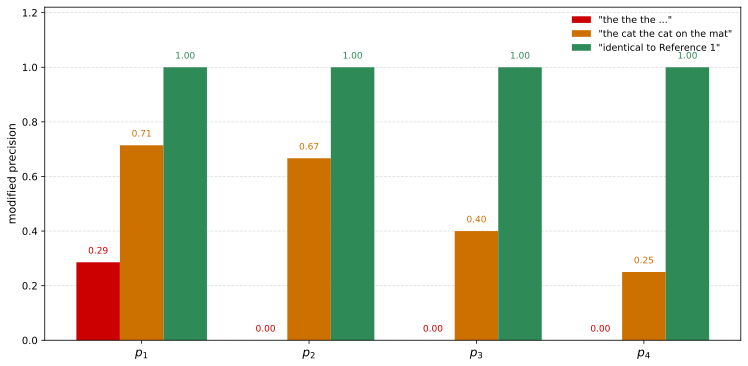
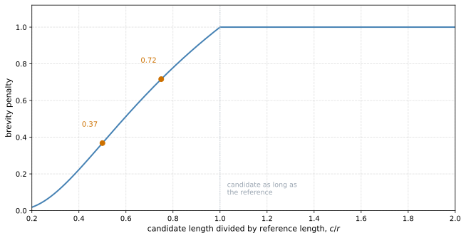

BLEU Score
deep-learning
sequence-models
nlp
machine-translation
evaluation
bleu
n-grams
metrics
How to score a translation automatically when several different translations are equally good, using modified n-gram precision and a brevity penalty.
Image recognition has one right answer, so you measure accuracy. Machine translation does not. Given a French sentence there can be several English translations that are all equally good, which raises a question that has to be answered before any of the previous pages can be evaluated at all. If there are multiple great answers, how do you measure how well a translation did?
The conventional answer is the BLEU score, from Papineni et al. (2002). The name stands for bilingual evaluation understudy. In the theater an understudy learns the role of a more senior actor so that they can take over if necessary, and that is the idea here. You could pay human evaluators to judge every output of a translation system. The BLEU score is a substitute for doing so.
Take the French sentence Le chat est sur le tapis and two human translations of it.
| Translation | |
|---|---|
| Reference 1 | the cat is on the mat |
| Reference 2 | there is a cat on the mat |
Both are perfectly fine. The BLEU score takes a machine translation and computes a number measuring how good it is, and the intuition is that as long as the output is close to any of the human references, it scores highly. Those references come as part of the development or test set.
Modified Precision
Start with the obvious measure and watch it fail.
Suppose the machine translation system, abbreviated MT from here on, outputs the the the the the the the. This is clearly terrible. Now look at each word of the output and ask whether it appears in the references. There are seven words, and every one of them appears in Reference 1, so this scores a precision of 7 out of 7. A perfect score for a useless translation.
The fix is modified precision. Give each word credit only up to the maximum number of times it appears in any single reference. The word the appears twice in Reference 1 and once in Reference 2, and 2 is the larger, so the earns credit at most twice.
\[p_1 = \frac{2}{7}\]
The numerator counts occurrences in the output, clipped at the reference maximum. The denominator counts the words in the output.
N-gram Precision
Words in isolation are not enough. A bag of correct words in the wrong order should not score well, so BLEU also looks at pairs of adjacent words, called bigrams, and at longer runs.
Give the MT system a slightly better output, the cat the cat on the mat. Still not great, but better than the last one. Its six bigrams break down as follows.
| Bigram | Count in output | Clipped count |
|---|---|---|
| the cat | 2 | 1 |
| cat the | 1 | 0 |
| cat on | 1 | 1 |
| on the | 1 | 1 |
| the mat | 1 | 1 |
| total | 6 | 4 |
Reading the clipped column, the cat appears once in Reference 1 and not at all in Reference 2, so its maximum over the references is 1 and its count of 2 is clipped to 1. cat the appears in neither reference, so it clips to 0. The rest each appear once in at least one reference and keep their count of 1.
\[p_2 = \frac{4}{6} = \frac{2}{3}\]
The same construction works for any \(n\). Writing \(\hat{y}\) for the machine translation output,
\[p_n = \frac{\displaystyle\sum_{g \, \in \, G_n(\hat{y})} \text{Count}_{\text{clip}}(g)}{\displaystyle\sum_{g \, \in \, G_n(\hat{y})} \text{Count}(g)}\]
where \(G_n(\hat{y})\) is the set of distinct n-grams in the output, which is why the table above has one row per distinct bigram rather than one row per position. So \(p_1\) is on single words, \(p_2\) on pairs, \(p_3\) on triples, and so on.
That is the single-sentence version, and it is the one worked through above. When scoring a whole test set the paper does not average these per-sentence numbers. It pools them, adding up the clipped counts across every candidate to form one numerator and the total counts across every candidate to form one denominator, and divides once. The length quantities in the brevity penalty are corpus totals for the same reason. Together they measure how far the output overlaps with the references at several scales at once.
Notice the green bars. If the output is exactly equal to one of the references then every \(p_n\) equals 1.0. So a modified precision of 1.0 is attainable by matching a reference exactly, and it is sometimes attainable without doing so, by combining the references in a way that still reads well.
Notice also how the other two fall away as \(n\) grows, the repetition immediately and the second candidate more gradually, from 0.71 down to 0.25. Longer n-grams are where word order shows up, and an output that is a plausible bag of words but a bad sentence cannot hide there.
Combining Into One Score
By convention, combine \(p_1\) through \(p_4\) into a single number and multiply by a penalty. Papineni et al. (2002) define the combination as a geometric mean of the precisions, which is a weighted sum of their logarithms inside the exponential.
\[\text{BLEU} = \text{BP} \cdot \exp\left(\sum_{n=1}^{N} w_n \log p_n\right)\]
with \(N = 4\) and uniform weights \(w_n = 1/N\) in their baseline. Two consequences are worth noting. A candidate identical to a reference has every \(p_n = 1\), so every \(\log p_n\) is 0 and the score is \(\text{BP} \cdot 1 = 1\), which is what puts BLEU on a 0 to 1 scale. And a single \(p_n\) of zero drives its logarithm to negative infinity and takes the whole score to zero, which is why a short candidate with no matching 4-grams scores 0 rather than something small.
NoteLecture writes this differently
The lecture states the combination as an exponentiated arithmetic mean of the precisions themselves rather than of their logarithms, \(\text{BP} \cdot \exp\left(\frac{1}{4}\sum_{n=1}^{4} p_n\right)\). That expression is not the metric defined in the paper and does not share its range. A perfect candidate has every \(p_n = 1\), and the exponentiated average then returns \(e \approx 2.718\) rather than 1. The paper’s form is used above.
The remaining factor is BP, the brevity penalty. Short outputs find it easier to get high precision, because most of the few words they emit probably do appear in the references. Precision alone therefore rewards translations that are too short, and the brevity penalty is the adjustment that stops it.
It equals 1 when the MT output is longer than the reference, and otherwise it is a decaying exponential that penalizes the shortfall. Write \(c\) for the total length of the candidate translations and \(r\) for the effective reference length, which the paper obtains by taking the reference length closest to each candidate and summing those over the corpus. With two references of different lengths, as here, that is what settles which one \(r\) refers to.
\[\text{BP} = \begin{cases} 1 & \text{if } c > r \\[2pt] e^{(1 - r/c)} & \text{if } c \leq r \end{cases}\]

Almost nobody implements BLEU from scratch. There are open source implementations to download and run against your own translations.
Where BLEU Is and Is Not Used
An earlier course made the case for having a single real number evaluation metric, because it lets you try two ideas, see which scores higher, and keep that one. That is exactly what BLEU gave machine translation. It is by no means perfect, and it was good enough to accelerate the progress of the entire field.
Today it is used to evaluate many systems that generate text, including the image captioning models from earlier, where a generated caption is compared against one or several reference captions written by people.
It is not used for speech recognition. There the audio usually has one ground truth transcript, so you measure whether the transcription is word for word correct and there is no need for a metric that tolerates several right answers. BLEU earns its place precisely where several outputs can be about equally good.
NoteWhat You Should Remember
- Translation has no single right answer, which is what makes a plain accuracy measure useless.
- Plain precision is broken, since an output of one repeated word can score perfectly.
- Modified precision fixes it by clipping each n-gram’s credit at the most times it appears in any one reference.
- BLEU combines \(p_1\) through \(p_4\), so it measures word choice and word order together.
- The brevity penalty stops the metric rewarding translations that are too short.
- Use BLEU when several outputs can be equally good, and not when there is one ground truth.
Review Questions
1. The output the the the the the the the scores 7 out of 7 on plain precision. What does modified precision give it, and what exactly changed?
Answer
It gives \(2/7\). The denominator is unchanged at seven, the number of words in the output. What changed is the numerator. Plain precision counts each output word that appears anywhere in the references, so all seven copies of the count and the score is 7 out of 7. Modified precision caps the credit for a word at the largest number of times it appears in any single reference. the appears twice in Reference 1 and once in Reference 2, so the cap is 2, and only two of the seven copies earn credit. The clip is what removes the reward for repeating a common word.
1. Why compute \(p_2\), \(p_3\) and \(p_4\) rather than stopping at \(p_1\)?
Answer
Because \(p_1\) is blind to word order. It treats the output as a bag of words, so a scrambled sentence made entirely of correct words scores as well as the correct sentence. Higher n-grams are where order shows up, since a bigram only matches if two words appear adjacent and in the right sequence. The figure shows the effect. The output the cat the cat on the mat holds up at 0.71 on unigrams and 0.67 on bigrams, then falls to 0.40 on trigrams and 0.25 on 4-grams, and it is that decline rather than the unigram score that reflects how bad the sentence is. The only 4-gram it gets credit for is cat on the mat, which is the one stretch of it that reads like Reference 2.
1. Precision already penalizes translations that are too long. Why does BLEU need an extra penalty for translations that are too short?
Answer
Because the two errors sit on opposite sides of the fraction. Extra words that match nothing enlarge the denominator without enlarging the numerator, so a padded translation is already punished by modified precision itself. A translation that is too short has the opposite advantage. Emitting only the few words you are most confident about keeps the denominator small and the ratio high. Modified unigram precision gives the two-word output the cat a score of 2/2, exactly the 1.0 that an entire correct reference sentence earns, so on that measure alone the fragment is rated as highly as the complete translation. Nothing inside the precision calculation notices what was left out, which is why the correction has to be a separate multiplicative factor keyed to length.
References
- Papineni, K., Roukos, S., Ward, T., & Zhu, W.-J. (2002). Bleu: A method for automatic evaluation of machine translation. In Proceedings of the 40th Annual Meeting of the Association for Computational Linguistics (pp. 311-318). Association for Computational Linguistics. https://doi.org/10.3115/1073083.1073135